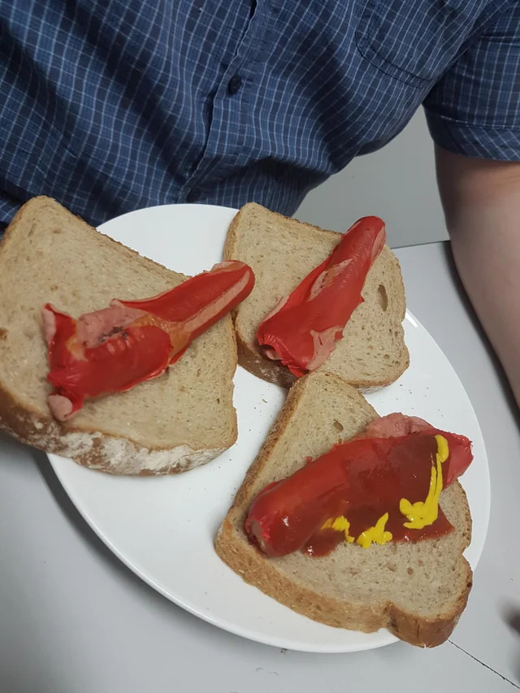

Australian Glizzy

There's nothing quite as easy and fast (nor as tasty!) as a good ol wiener in a bun. But there is something that can be annoying and that's the feeling of stuffing your bun with all the juicy and savory condiments and right before the pickup to have the first bite, breaking through an overstuffed bun.
Why bother when its much easier and simpler to just do as the Aussies do? Just a single slice of bread; nothing fancy, nothing simpler. Here's what you need and hey, if you're here, you're here cause you're here cause you NEED the steps:
Ingredients~
- Sliced bread
- Sausage dogs
- Your favorite condiments
Steps~
- Grab your sausage dogs and either grill them for 10 minutes on off heat, 5 minutes on direct heat of the fire or pan, or microwaving the sausage dog on approximately a minute but increasing the cooking time if on lower wattage or adding more dogs, or boiling dogs in a pot of boiling water for 4 to 6 minutes.
- Take your bread slice and place the sausage dog on it
- Add whatever condiments you wish to spice up your dog and no need even for a plate! Sliced bread is modern humanity's plate...